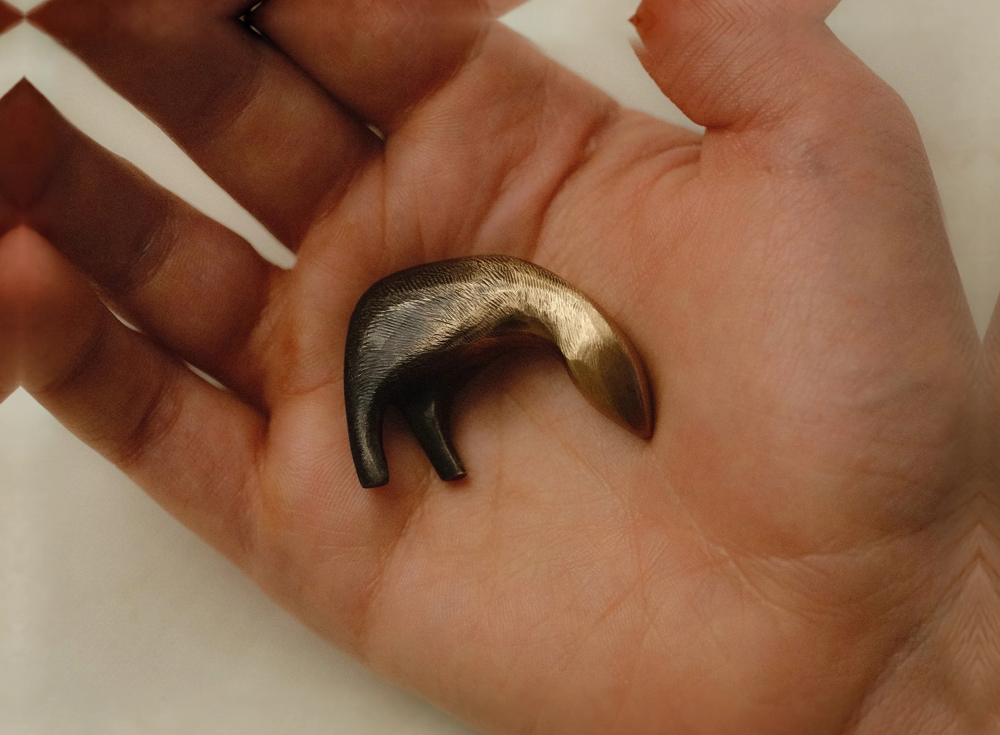
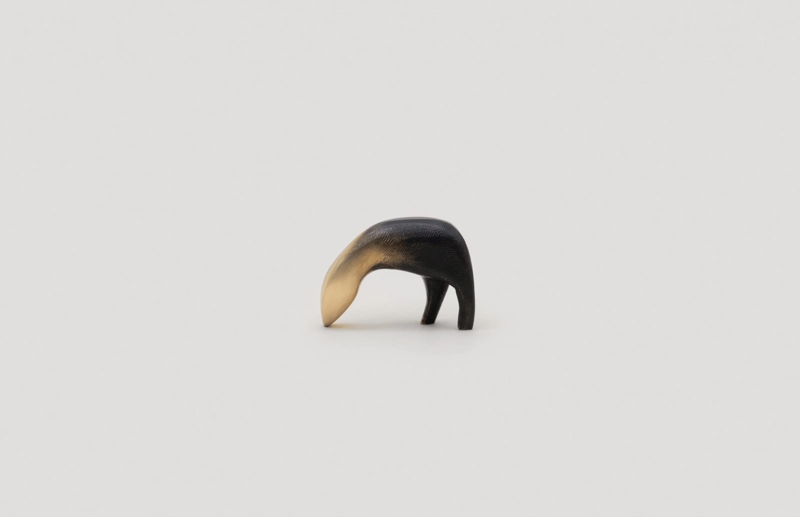
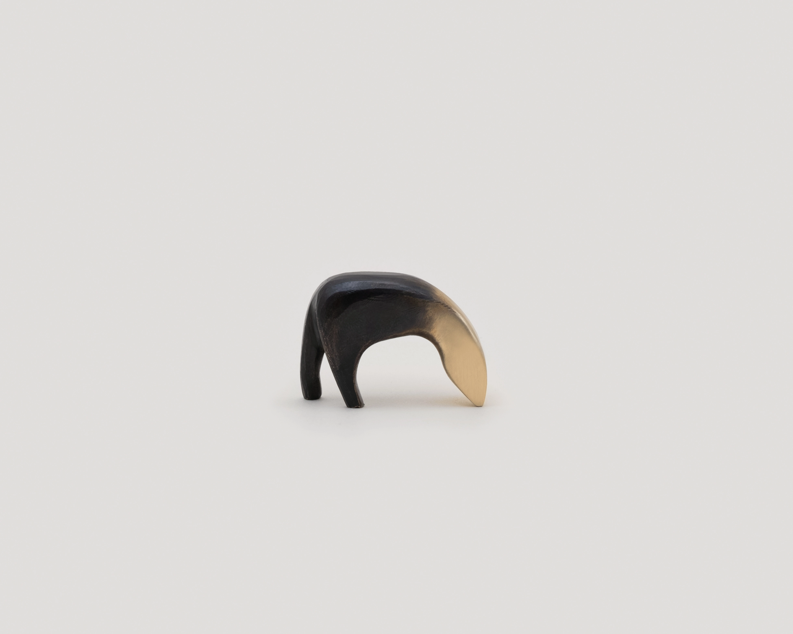

Ancient Wanderer
Milo
$180Free shipping
Hammered from the first fire, eldest of three brothers. Wherever it is set down, the younger two are never far behind.
- 36 × 26 × 11 mm
Solid bronze
Every piece arrives in our box, ready to give. Check Add gift wrapping in your bag and we’ll wrap it up with an extra flourish, and write out your note by hand. Add the gift receiver’s address at checkout and it goes straight to them. If it isn’t quite right, they can return it within 30 days for store credit.
Each piece is made to order; please allow up to 10 business days before it ships. Shipping is free on all orders within the continental US, and every order arrives in a special box, wrapped with care.
Pieces in original condition may be returned within 30 days of delivery for store credit. If a piece doesn't fit, we'll gladly help you find the right size.
Shipping abroad: prices are shown in US dollars. Duties and import taxes are included at checkout, so nothing more is due on arrival.
If it arrives and is not quite right, we will gladly exchange it within 30 days: write to hello@studiomacon.co.
Bronze changes with handling and the air it lives in, so no two age alike. To brighten the golden head, rub it gently with a soft cloth and a little metal polish, keeping clear of the darker body.
Found Together